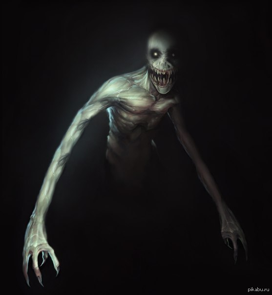
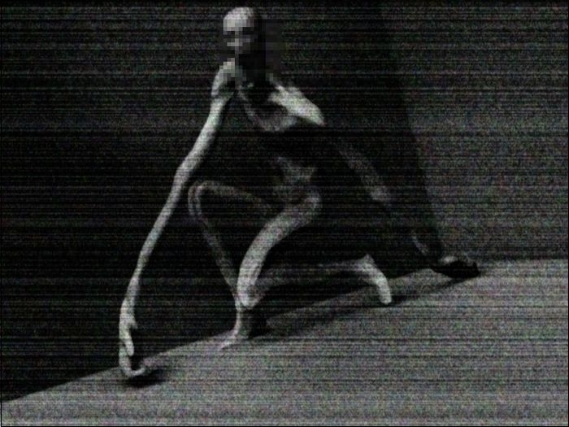

SCP-096 - «Скромник»

Особливі умови утримання: SCP-096 повинен постійно утримуватися в своїй камері (герметичний сталевий куб 5х5х5 м). Обов'язкові щотижневі перевірки на наявність будь-яких тріщин або отворів. Усередині камери SCP-096 не повинно бути абсолютно ніяких пристроїв відеоспостереження або оптичних приладів. Співробітники служби охорони повинні використовувати попередньо встановлені датчики тиску і лазерні детектори, щоб переконатися, що SCP-096 знаходиться в камері.
Всі фото, відео або опису зовнішності SCP-096 строго заборонені без узгодження з доктором ███ і O5-█.
Опис: SCP-096 - гуманоїдні істота зростом приблизно 2,38 метра. У суб'єкта спостерігається мала кількість м'язової маси, попередні аналізи маси тіла показують легке недоїдання. Руки непропорційно великі по відношенню до тіла об'єкта, довжина кожної дорівнює приблизно 1,5 м. Шкіра в основному позбавлена пігментації, ознаки волосся на тілі відсутні.
Щелепи SCP-096 можуть відкриватися в чотири рази ширше норми для середньої людини. Інші риси обличчя аналогічні середнім людським, за винятком очей, які також позбавлені пігментації. На даний момент невідомо, сліпий SCP-096 чи ні. Він не показує ознак вищих мозкових функцій, його розумність не підтверджена.
Як правило, SCP-096 надзвичайно спокійний, датчики тиску в камері вказують, що він проводить більшу частину дня, походжаючи вздовж східного муру. Однак коли хто-небудь бачить обличчя SCP-096, будь це безпосередньо, на відеозапису, чи навіть на фотографії, - він приходить в стан крайнього емоційного переживання. SCP-096 закриває обличчя руками і починає кричати, плакати і невиразно бурмотіти. Приблизно через одну-дві (1-2) хвилини після першого перегляду SCP-096 біжить до побачив його обличчя (далі позначається як SCP-096-1).
Задокументована швидкість варіюється від 35 до ███ км / год, і, мабуть, залежить від відстані до SCP-096-1. На даний момент жоден відомий матеріал або метод не може перешкоджати руху SCP-096. Фактичне розташування SCP-096-1 не робить видимого впливу на реакцію SCP-096; він, схоже, володіє вродженим чуттям місцезнаходження SCP-096-1. Примітка: ця реакція не з'являється, якщо дивитися на художні зображення (див. Документ 096-1).
Після прибуття в розташування SCP-096-1 SCP-096 приступає до вбивства і [ДАНІ ВИДАЛЕНІ] SCP-096-1. У 100% випадків не залишається і сліду від SCP-096-1. Після цього SCP-096 сідає на кілька хвилин, перш ніж знову набуде холоднокровність і стане слухняним. Потім він спробує повернутися в своє природне місце існування, [ДАНІ ВИДАЛЕНІ].
У зв'язку з можливістю масової ланцюгової реакції, що включає порушення секретності Організації і великі втрати серед цивільних, розшуку суб'єкта повинен бути привласнений Альфа-пріоритет.
Доктор ███ також клопотав про негайне знищення SCP-096 (див. Інтерв'ю 096-1). Наказ очікує підтвердження. Наказ про знищення підтверджений і повинен бути виконаний доктором ███ [ДАНІ ВИДАЛЕНІ]. Див. Звіт про інцидент 096-1-А.